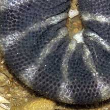
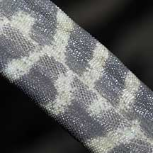
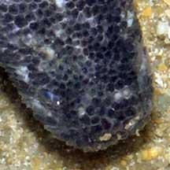
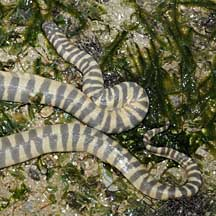
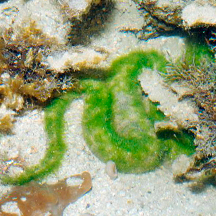
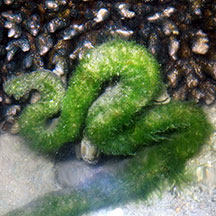
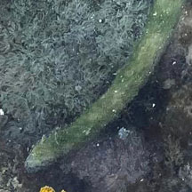

|
|
| snakes text index | photo index |
| Phylum Chordata > Subphylum Vertebrata > Class Reptilia > shore snakes |
| Banded
file snake Acrochordus granulatus Family Acrochordidae updated Oct 2019 Where seen?This snake with bands is sometimes seen on some of our shores, near seagrass meadows and mangroves. According to Baker, it is mainly found in the Johor Straits including Sungei Buloh Wetland Reserve and was also found out of water, hidden in mudlobster mounds. A nocturnal snake, it is usually seen in the late evening or early morning. It is widely distributed from India to Southeast Asia to southern China and northern Australia. It was previously known as Chersydrus granulatus. Features: To about 1m, but usually shorter. Body cylindrical, banded with black or brown bands on white or beige. The bands are broad on the top of the snake but narrows at the sides. It does not have a distinct 'neck', the head is small and blunt. On the underside, it has no enlarged scales and instead has a prominent fold of skin along the centre of the belly. The tail is tapered to a point and is not flattened. The Banded file snake is non-venomous and harmless to humans. Sometimes confused with the highly venomous Yellow-lipped sea snake (Laticauda colubrina). Here's how to tell apart banded snakes seen near the coast. It may also be confused with eels. Here's more on how to tell apart sea snakes, eels and eel-like animals. Another file snake recorded for Singapore is the Elephant trunk water snake (Acrochordus javanicus). It is longer, grows to about 2.9m. It is not banded and is olive brown to grey brown with faintly marbled black pattern on the sides. The underside is lighter than the upperside. There is no prominent central fold on the underside. In slow-moving waters of estuaries and freshwater streams and canals. What does it eat? Mainly small fishes such as bottom dwelling gobies. The snake has a loose skin covered with small rough scales. The file-like skin helps it to grip its slippery prey. The snake has tiny eyes and a small mouth. File Babies: Mama snake does not lay eggs and instead, gives birth to live young in litters of 5-10. |
 Pulau Sekudu, Jul 05 |
 Loose, granulated skin Pulau Sekudu, Jul 05 |
 Central fold on the underside Pulau Sekudu, Jul 05 |
 Small eyes (clouded, suggesting the snake is about to moult) |
 Loose skin and the tail is not paddle-shaped. Pulau Sekudu, Jul 09 |
| Banded file snakes on Singapore shores |
On wildsingapore
flickr
|
| Other sightings on Singapore shores |
 Covered with algae! Pulau Semakau North, Aug 13 Photo shared by Loh Kok Sheng on his blog. |
 Covered with algae! Pulau Semakau South, Oct 18 Photo shared by Jianlin Liu on facebook. |
 Terumbu Semakau, Aug 24 |
| Terumbu Semakau, Jul 2020 |
| Pulau
Semakau, 26 Apr 2017 |
| Pulau
Semakau, Aug 2013 Shared by Heng Pei Yan on her blog |
| Filmed on Pulau
Semakau Aug 2013 banded file snake - 01Feb2011 from SgBeachBum on Vimeo.
|
| Family
Acrochordidae recorded for Singapore from Wee Y.C. and Peter K. L. Ng. 1994. A First Look at Biodiversity in Singapore. *from Lim, Kelvin K. P. & Francis L K Lim, 1992. A Guide to the Amphibians and Reptiles of Singapore
|
|
Links
References
|